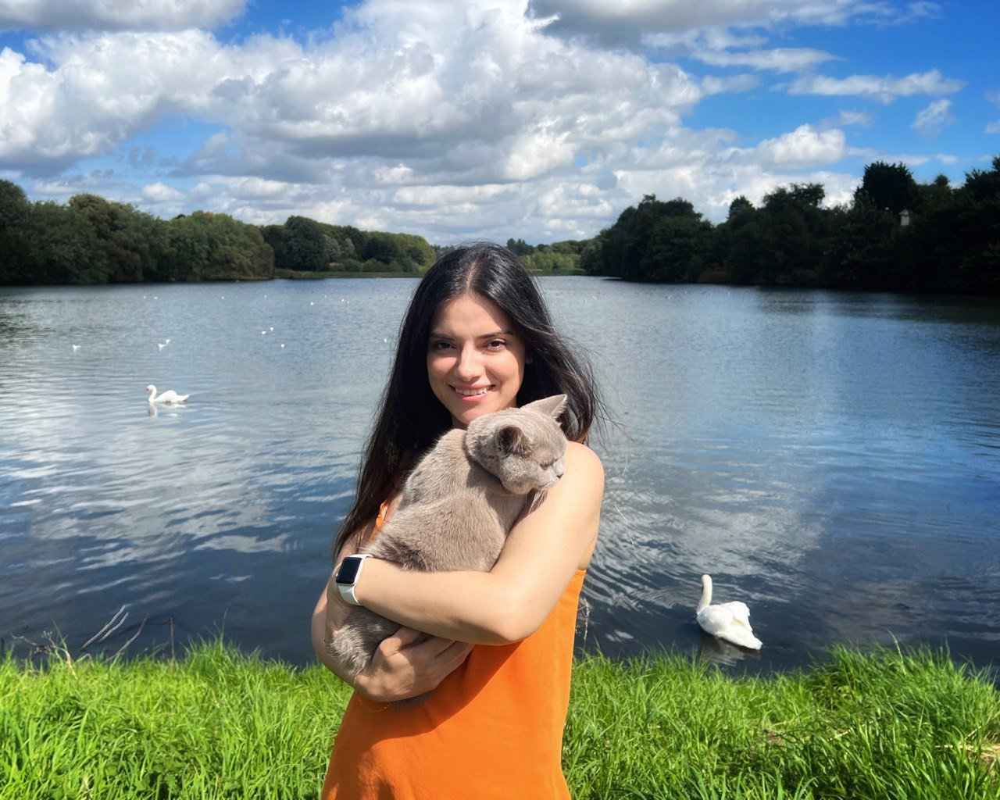
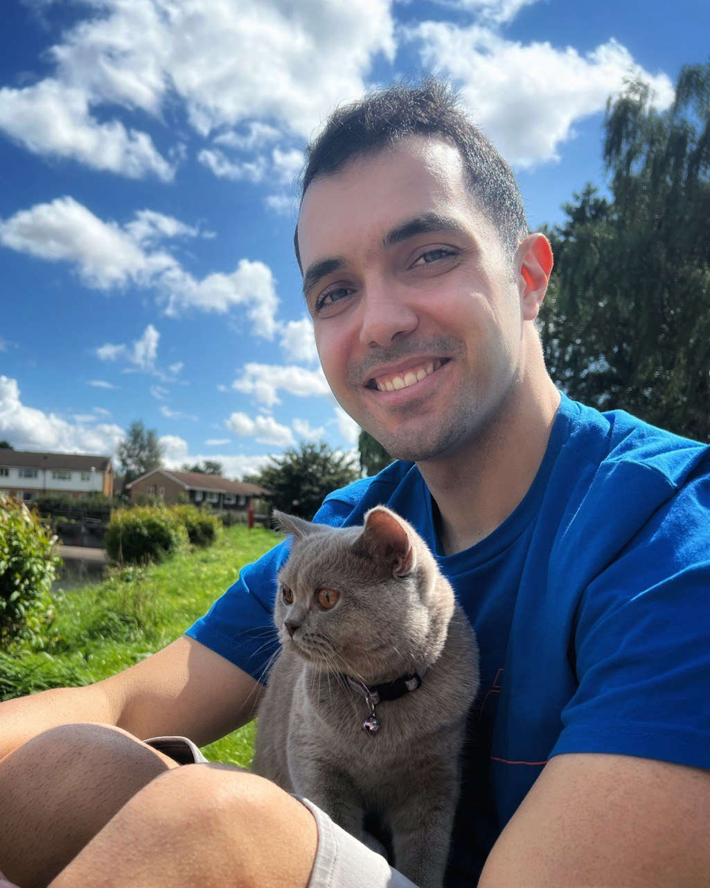

Hello, World!
My name is Lilac. I am a cat. I live with my mummy and daddy in Birmingham.I sleep 16
hours a day. The rest of the day I enjoy eating food and playing with my toys.
My mummy adores me and she thinks I am the the most beautiful cat in the world.I, however, scratch the hell out of her sometimes, but I intend to play with her. She usually brushes my fur in the morning so that I like nice. She feeds me 4 times a day, which makes her my favorite human in the whole universe. Not to mention that she is the best cook that I've ever known.
This is my Daddy. He loves me too! He calls me fatty most of the times and thretens me when I scratch his chair! I love our playtime with my Daddy. I scratch and bite him while playing and he loves that!
